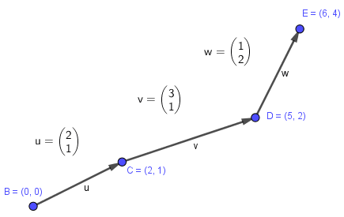

Mathematical algorithms
In this post
Integer divisibility
Divisibility of an integer number can be found by repeated subtraction until zero is reached, but, plotting a table of multiples for each number, we can spot patterns for some of them [1].
| 1 | 2 | 3 | 4 | 5 | 6 | 7 | 8 | 9 | 10 | 11 | 12 | |
|---|---|---|---|---|---|---|---|---|---|---|---|---|
| x 2 | 2 | 4 | 6 | 8 | 10 | 12 | 14 | 16 | 18 | 20 | 22 | 24 |
| The numbers above all end with digit 0, 2, 4, 6 or 8: | ||||||||||||
| final digit | 2 | 4 | 6 | 8 | 0 | 2 | 4 | 6 | 8 | 0 | 2 | 4 |
| 1 | 2 | 3 | 4 | 5 | 6 | 7 | 8 | 9 | 10 | 11 | 12 | |
|---|---|---|---|---|---|---|---|---|---|---|---|---|
| x 3 | 3 | 6 | 9 | 12 | 15 | 18 | 21 | 24 | 27 | 30 | 33 | 36 |
| In each number above, the sum of the digits is divisible by 3: | ||||||||||||
| digit sum | 3 | 6 | 9 | 3 | 6 | 9 | 3 | 6 | 9 | 3 | 6 | 9 |
| 1 | 2 | 3 | 4 | 5 | 6 | 7 | 8 | 9 | 10 | 11 | 12 | |
|---|---|---|---|---|---|---|---|---|---|---|---|---|
| x 5 | 5 | 10 | 15 | 20 | 25 | 30 | 35 | 40 | 45 | 50 | 55 | 60 |
| In each number above, the final digit is 0 or 5: | ||||||||||||
| final digit | 5 | 0 | 5 | 0 | 5 | 0 | 5 | 0 | 5 | 0 | 5 | 0 |
| 1 | 2 | 3 | 4 | 5 | 6 | 7 | 8 | 9 | 10 | 11 | 12 | |
|---|---|---|---|---|---|---|---|---|---|---|---|---|
| x 6 | 6 | 12 | 18 | 24 | 30 | 36 | 42 | 48 | 54 | 60 | 66 | 72 |
| Each number above is divisible by both 2 and 3. For counterexamples, 21 is divisible by 3, but not 2; and 14 is divisible by 2, but not 3. |
||||||||||||
| / 2 | 3 | 6 | 9 | 12 | 15 | 18 | 21 | 24 | 27 | 30 | 33 | 36 |
| / 3 | 2 | 4 | 6 | 8 | 10 | 12 | 14 | 16 | 18 | 20 | 22 | 24 |
| 1 | 2 | 3 | 4 | 5 | 6 | 7 | 8 | 9 | 10 | 11 | 12 | |
|---|---|---|---|---|---|---|---|---|---|---|---|---|
| x 10 | 10 | 20 | 30 | 40 | 50 | 60 | 70 | 80 | 90 | 100 | 110 | 120 |
| In each number above, the final digit is 0. | ||||||||||||
| final digit | 0 | 0 | 0 | 0 | 0 | 0 | 0 | 0 | 0 | 0 | 0 | 0 |
So by these (non-exhaustive) heuristics, an integer is divisible by:
- \(2\) if the last digit is \(0\), \(2\), \(4\), \(6\) or \(8\)
- \(3\) if the sum of the digits is divisible by \(3\)
- \(5\) if the last digit is \(5\) or \(0\)
- \(6\) if it is divisible by both \(2\) and \(3\)
- \(10\) if it ends with \(0\)
In the second item above (division by \(3\)), the algorithm will loop forever if primary division by \(3\) is not defined first (because the criteria refers to itself). To implement this, for numbers up to \(10\) we can use repeated subtraction by \(3\) to check that zero is arrived at (that is, there is no remainder in the division).
All code in this article is available at [2].
// Scala.js code
def tailDigit(n: Int) = n.toString().takeRight(1).toInt
def digits(n: Int) = n.toString().split("").map {_.toInt}
def longRem(a: Int, b: Int): Int =
if (a >= b)
longRem(a - b, b)
else a
def divisible(a: Int, b: Int): Boolean =
//if (a > 10) None else
if (b == 2)
Array(0, 2, 4, 6, 8).contains(tailDigit(a))
else if (b == 3)
if (a > 10)
divisible(digits(a).fold(0)((a, b) => a + b), 3)
else
longRem(a, 3) == 0
else if (b == 5)
Array(0, 5).contains(tailDigit(a))
else if (b == 6)
divisible(a, 2) && divisible(a, 3)
else if (b == 10)
tailDigit(a) == 0
else false
def longRemTests() = Array(
assEq("LongRem1", () => longRem(10, 3), 1),
assEq("LongRem2", () => longRem(12, 4), 0),
assEq("LongRem3", () => longRem(203, 17), 16)
)
def divisibleTests() = Array(
assEq("Divisible1", () => divisible(20, 10), true),
assEq("Divisible1b", () => divisible(31, 10), false),
assEq("Divisible2", () => divisible(4, 2), true),
assEq("Divisible2b", () => divisible(5, 2), false),
assEq("Divisible1b", () => divisible(31, 10), false),
assEq("Divisible3", () => divisible(15, 5), true),
assEq("Divisible3b", () => divisible(19, 5), false),
assEq("Divisible1b", () => divisible(31, 10), false),
assEq("Divisible4", () => divisible(12, 6), true),
assEq("Divisible4b", () => divisible(13, 6), false),
assEq("Divisible1b", () => divisible(31, 10), false),
assEq("Divisible5", () => divisible(18, 3), true),
assEq("Divisible5b", () => divisible(17, 3), false),
)
Vector-point conversion
In a vector space, each vector in a series (a cumulative sum of vectors) is relative to the previous vector in the sequence; that is, its value (numbers) denote the change from that last vector. The only absolute vector in the sum is the result vector. As individual vectors, the sum vector is absolute.
A vector path is created in a relative fashion; that is, in the sequence, each vector must represent its own displacement from the position represented by the cumulative sum up to that point.
The path itself, however, only exists in a coordinate system. This requires a "conversion" from vectors to points; which can be performed inversely as well.
The operation of consecutive summing of vectors yields the points in the path.
On the other hand, given the points in a path, recovering the vectors means doing the reverse process, starting from the final vector (which is the sum vector), and consecutively subtracting each point to form each vector.
Given the following vector path:
(* Wolfram code *)
On@Assert
(* Test that the sum vector of the vectors composing the path is
the last point in the path
Expected: (6, 4)
*)
Assert[
Total@{{2,1},{3,1},{1,2}} == {6,4}
]
(* Test that the cumulative sum of the vectors in the path
yield the points in the path
Expected: (2,1), (5, 2) and (6, 4)
*)
Assert[
Accumulate@{{2,1},{3,1},{1,2}} == {{2,1},{5,2},{6,4}}
]
(* Test that the cumulative subtraction of the points in the path from
the final (sum) vector yield the vectors in the path, in reverse order
Expected: (1, 2), (3, 1) and (2, 1)
*)
Assert[
#[[2]] & /@ MovingMap[(#Values[[1]] - #Values[[2]]) &,
MapIndexed[{First@#2, #1} &, (Reverse@{{0,0},{2,1},{5,2},{6,4}})], 1] == {{1,2},{3,1},{2,1}}
]
This means to synchronize a vectorial structure (i.e. a mesh) and its graphical representation with a coordinate system, it's ideal to keep and synchronize two data structures, one for vectors and the other for points. This elicits the question as to how to search the points list for a particular point representing one of the vectors in the vector list.
Since there is no relation between the vector and point values, it's necessary to keep an index of vector to point list positions.